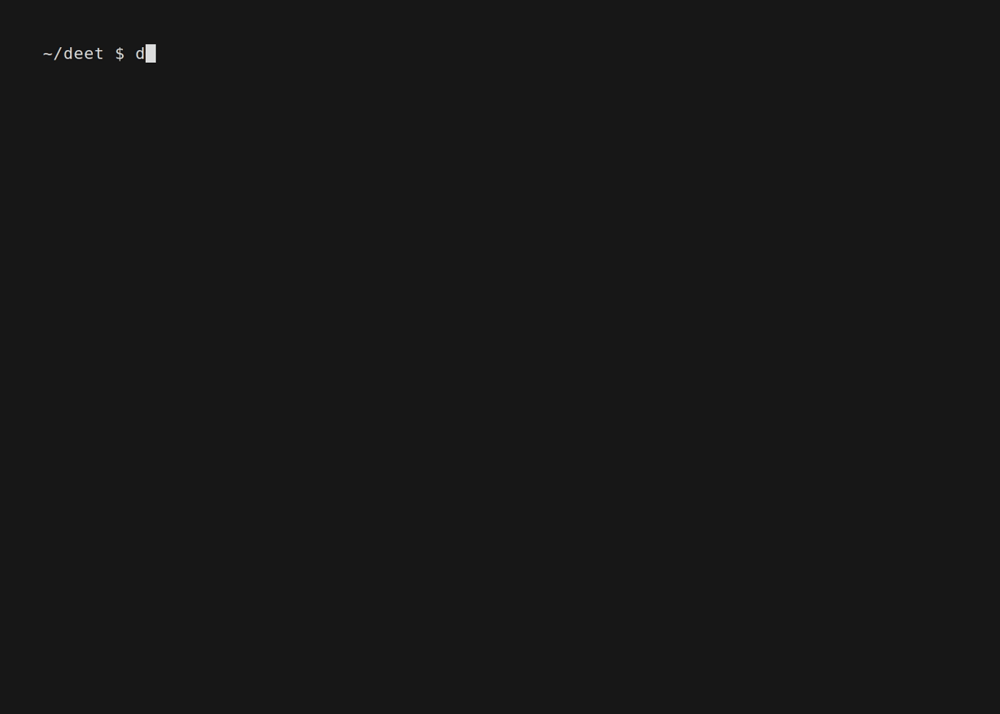

deet tutorial
This guide will help you to run first data extraction experiments using either the cli or python
Setting up a project
A DeetProject is a workspace for a data extraction task for a specific dataset.
Each project should have its own directory on your machine.
This is where we will store configuration options and the results of your data extraction experiments.
Initialising
-
CLI
To set up a project using the CLI, run
deet project initfrom the directory where you would like to store your project. Alternatively, you can rundeet project newto create a project in a new directory. This will interactively collect the information required to set your project up, and also prompt you to enter credentials for making API calls to LLMs.mkdir new-project cd new-project deet project initResult (Terminal)

Non-interactive project creation
If you wish to create a project without the interactive wizard, you can enter project data as command line arguments. Run
deet project init --helpfor more details. If you do this, you will need to create a.envfile yourself to store API credentials (see settings) -
Python
To set up a project in python, simply instantiate a DeetProject object, and then call
DeetProject.setup()from deet.data_models.project import DeetProject from deet.processors.converter_register import SupportedImportFormat from pathlib import Path project = DeetProject( name="my cool new project", gold_standard_data_path=Path("<path_to_your_data>"), gold_standard_data_format=SupportedImportFormat.EPPI_JSON, # Replace this if you are using another import format pdf_dir=Path("<path_to_your_pdf_dir>") ) project.setup()You should create a
.envfile yourself to store necessary API keys (see settings)Importing CLI commands
All CLI commands are defined as python functions. This means that any CLI command can be run directly in python.
This is often the simplest way to usefrom deet.scripts.commands.project import init init()deetin python. However, the following examples show how commands can be run using the underlying library
Linking documents to pdfs
If you want to extract data from the full texts of your documents, you will need to edit the file link_map.csv created in your project directory by setting up deet, to point each document to the file that contains its pdf. The name of the file should be entered in the file_path column.
On initialising a project, this columnn is pre-filled with plausible mappings, but you should check that these are correct and add any missing paths yourself.
External and internal IDs
Note that deet uses the document_id field internally. Where imported documents have an id that is not compatible, this is preserved in external_id, and converted to a compatible document_id. Where external IDs are compatible, these fields will be identical.
| document_id | external_id | name | file_path |
|---|---|---|---|
| 12345678 | 12345678 | Incidence of malaria-related fever and morbidity due to Plasmodium falciparum among HIV1-infected pregnant women: a prospective cohort study in South Benin | nan |
| 12345679 | 12345679 | A correlation study between weather and atmosphere with COVID-19 pandemic in Islamabad, Pakistan | nan |
Once you are happy with this file, you can link the documents
-
CLI
In the CLI, you can do this by running
deet project link -
Python
To do this in python, use the DocumentReferenceLinker. You can also choose other strategies to link documents and pdfs (see deet.processors.linker)
from deet.processors.linker import DocumentReferenceLinker, LinkingStrategy from deet.data_models.project import DeetProject project = DeetProject.load() processed_annotation_data = project.process_data() linker = DocumentReferenceLinker( references=processed_annotation_data.documents, document_base_dir=project.pdf_dir, document_reference_mapping=project.link_map_path, linking_strategies=[LinkingStrategy.MAPPING_FILE], ) linked_documents = linker.link_many_references_parsed_documents()
Extracting data
Writing and editing prompts
Setting up a project creates a file called prompts/prompt_definitions.csv with a row for each of the attributes you can extract from your data.
Edit this file, creating a prompt in the prompt column. This can contain any text, including commas.
Leave the prompt column blank for any attribute you do not wish to extract.
You can also edit the output_data_type column (more info) if the automatically parsed data type is incorrect.
| prompt | output_data_type | attribute_id | attribute_label | attribute_selection_type | attribute_set_description | hierarchy_path | hierarchy_level | is_leaf | parent_attribute_id | attribute_description |
|---|---|---|---|---|---|---|---|---|---|---|
| nan | bool | 1 | Relevant (major category) | Selectable (show checkbox) | nan | nan | 0 | True | nan | nan |
| nan | bool | 3 | Mitigation | Selectable (show checkbox) | nan | nan | 0 | True | nan | nan |
| nan | bool | 4 | Adaptation | Selectable (show checkbox) | nan | nan | 0 | True | nan | nan |
| nan | bool | 5 | Impacts | Selectable (show checkbox) | nan | nan | 0 | True | nan | nan |
Running an extraction experiment
Now that you've defined your prompts, you are ready to extract data from your documents.
-
CLI
In the CLI, you can do this by running
deet experiments evaluateThis will take you through an interactive wizard where you can select configuration options for your project.
If you wish to skip the interactive wizard, simply pass a path to a configuration file to the
--config-pathargument.Running
deet experiments evaluatewill create a folder in your project'sdata-extraction-experimentsdirectory, run the data extraction pipeline, and save the results of that experiment to the newly created folder. It will also save a snapshot of the prompts you used, as well as the config you used, making it easy to reproduce your experiments. If you wish to use prompts from a different location than the default location for your project, you can run an experiment with the--prompt-csv-pathoption, e.g.deet experiments evaluate --prompt-csv-path my-custom-prompts.csv -
Python
To do this in python, use the LLMDataExtractor. You can use a DataExtractionConfig object to set configuration options
from deet.extractors.llm_data_extractor import LLMDataExtractor, DataExtractionConfig from deet.data_models.enums import CustomPromptPopulationMethod from deet.extractors.cli_helpers import ( init_extraction_run, load_config_from_context, prepare_documents, ) from deet.data_models.project import DeetProject project = DeetProject.load() config = DataExtractionConfig( # configure options here, or leave blank to use defaults ) data_extractor = LLMDataExtractor(config=config) processed_annotation_data = project.process_data() # Populate your custom prompts processed_annotation_data.populate_custom_prompts( method=CustomPromptPopulationMethod.FILE, filepath=project.prompt_csv_path ) documents = prepare_documents( processed_annotation_data.documents, config, linked_document_path=project.linked_documents_path, pdf_dir=project.pdf_dir, link_map_path=project.link_map_path, ) run_output = data_extractor.extract_from_documents( attributes=processed_annotation_data.attributes, documents=documents, context_type=data_extractor.config.default_context_type, output_file=experiment_artefacts.llm_annotations, show_progress=True, )